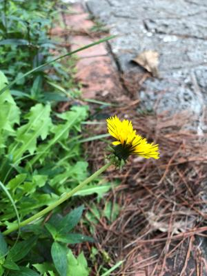
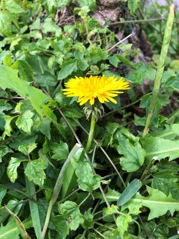
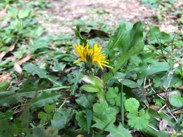
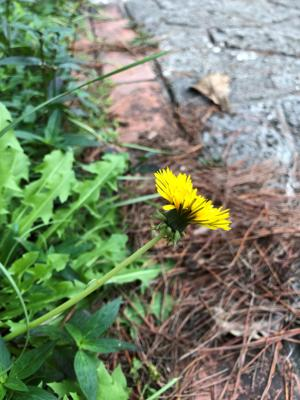
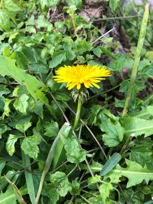
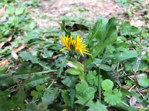
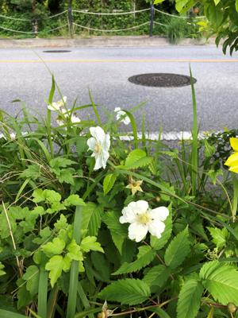

うるがいの話 ある日
最新: 西洋タンポポ【うるがいの話 ある日】とは 一日だけのプログです
『うるがいの話』の最新一日だけのプログで、通信料が少なく経済的だ。カニの画像をクリックすると全ての日付が載る『うるがいの話』サイトを表示します
|
|
【うるがいの話】 うるがい(ｳﾙｶﾞｲ urugai)とは、『もずくがに』の名前でとても大きくなります。 |
|---|---|
|
|
【カミマヤーの話】 猫のことを方言でマヤーといいます。カミマヤー（kamimayaa）とは、神の猫のことです。 |
|
【たながぁの音楽】 たながぁ（ﾀﾅｶﾞｰtanagaa）とは手長えびのことで、何種類かあり大きいのは車 エビぐらいになります。 |

|
【ぶながぁの話】 ぶながー(bunagaa)とは、赤い髪の毛、赤い身体、そして身長は１ｍ２０ｃｍ ぐらい、川の蟹を食べているの目撃された。場所は沖縄県国頭郡大宜味村のと ある村僕の隣近所に住んでいる爺さんから、聞いた話です。 |
|
|
【ギーマの話】 ギーマ(giima)とは、山原の里山に咲くスズランに似た、 花を付けます。実は食べられます、 気が付くと口の周りが紫になっています。 |
2022年02月12日 (土）西洋タンポポ
16:15
 





撮った３つ写真はいずれも額が西洋タンポポである。そもそも沖縄にタンポポ
の種類はと思ってネットで調べたが探せなかった。ただ、あるサイトに『沖縄
には黄色い花が咲くタンポポが３種あり、・・黄色以外に沖縄にも白い花のタ
ンポポもある。ヤンバルでよく見かけた。』と書いてある、ほー、と言う事は
黄色い日本タンポポもある、さらに白いタンポポ（日本タンポポ）もあるらし
い。

この前の水曜日、コドモが読みたいから借りてと頼まれた１３０人待ちの『沖
縄から貧困がなくならない本当の理由』がやっと市立図書館から借りることが
出来た。コドモに渡す前にと、夜の『??人材育成』のＺＯＯＭの研修を終え
たあと、読んだ。カチーン、カチーン、かちかち山、沖縄文化をコケにしまく
っている、それでも何か適正なアドバイスを書いていないか最後まで読む。ん
ー、借りる時に本の予約者が７５人待ちとあった。えー、読むんかいと思った
読んでいるとき、??人材育成の講師が補助金に話をした（下の赤の部分）が
本に出て来たとき、おお、と思った。でも、この著者はさらにその姿勢をケナ
ス！。山羊の刺し身には『まるこめ酢』を使う私は、怒った。
第4章 自分を愛せないウチナーンチュ 自尊心の問題から
沖縄社会は深刻な人材不足に苦しんでいるが、補助金を活用した人材育成プロ
グラムや、企業研修制度などの大半は、人を育てるということの本質を見誤っ
ている。人を育てるとは、自尊心を育むことがその基本であるべきなのだ。効
果的な人材育成のためには、自尊心の高い人材に教育を任せなければならない
。しかしながら、沖縄社会には、頑張る人材、目立った人材、個性的な人材を
ことごとく排除する社会構造が存在するため、そもそも自尊心の高い人材が重
用されにくい。大きな変化をもたらしそうな自尊心の高い人材は不必要だとも
言える。以前、 沖縄経済の「自立」について、沖縄側から「われわれは魚（補
助金）ではなく、魚を取る釣竿（事業）が欲しいのだ」という主張がなされた
ことがあった。 しかし、皮肉なことに、「釣竿をくれ」と言うこと自体が、自
尊心の低さを示している。自尊心の高い人材は、「自分で釣竿を作りたい。精
一杯頑張るので、ご指導ください」と謙虚に教えを請い、失敗を重ねながら学
んでいくだろう。
翌日家に来たコドモに本を渡そうすると、あまりにも遅いので３日前に友達か
ら借りたと言う。私が、読んでカチーンときたと言うとネットではいろいろ言
われているらしいと話した。その後ネットで評価を調べると以外と高評価であ
る。ん、なんで？と思ったが、アマゾンで評価星一つ『この内容が経営者でな
くインフルエンサー志望の島ナイチャーサラリーマンの意見であることがわか
る。』があった、多分私もその意見だ。ただ、ハローワークの求人サイトをい
つも見ている子供が、求人がだいたい１３万、それだと・・と言っていたのは
事実である。
１６時０４分 ビットコインの総資産 ￥１４、０９８↓